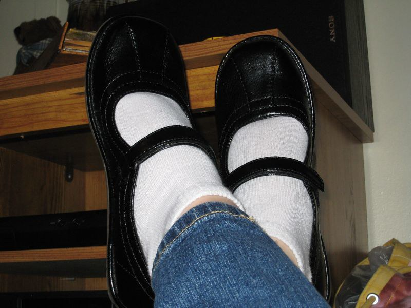
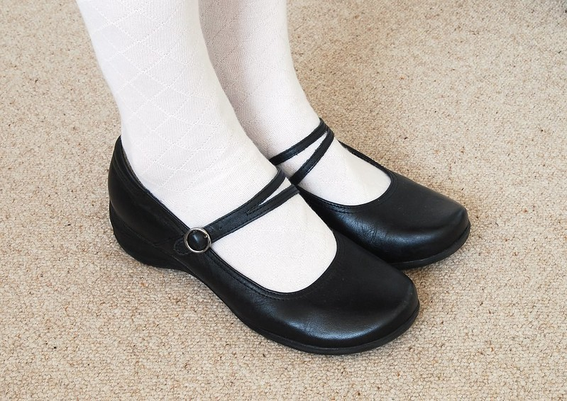

Ninties fashion is what I am currently inspired by and looking to wear. I love the look of the casual wear at the time, oversized clothing, baggy jeans, crop tops, and plaid, I love it all! Also the popular goth fashion at the time is my favorite subculture for gothic wear. 90s goth fashion is where the modern "whimsigoth" stems from, which is a style that combines whimsical or witchy elements into the goth look.
At the moment getting a nice pair of Mary Janes is on my mind, they're a basic and versatile shoe that I think could be fun to addition to my closet!
 Delia*s is a 90s fashion brand catalog that filed for bankruptcy in 2014, but it was then taken and licensed as a sub-brand under Dolls Kill in 2018. The Delia*s catalog flip through below is everything I love about 90s fashion. The baggy pants, skirts, tank tops, and jewelry are so colorful and fun, I miss that about fashion, the 'in' style right now to me is so plain. It also makes me dissapointed that fashion catalogs don't exist in the same way they used to anymore, it seems to me modern catalogs have gotten smaller and less effort is put in. It's a reminder to me how fast fashion has taken over.